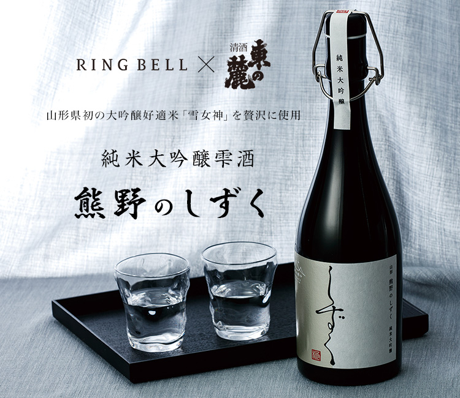
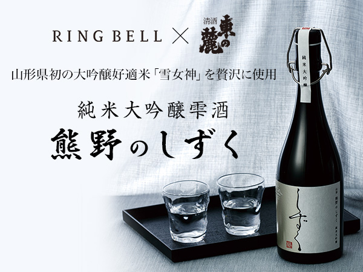
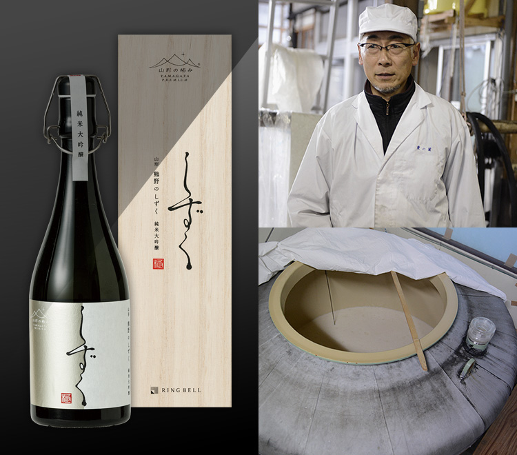
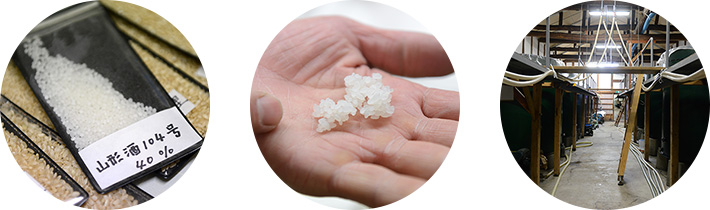
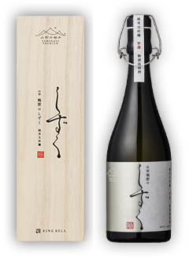

リンベルが日本一と認めた「極みの味」
山形生まれの純米大吟醸雫酒



- リンベルが高級酒ギフトを求めて開発した、
「雪女神」の中心部分だけを使ったピュアな雫酒 -
龍龍龍龍（てつ）の開発を成功させたリンベルが、今回さらなる高みを目指し、老舗蔵元・東の麓酒造とともに生み出したのが「純米大吟醸酒 熊野のしずく」です。
「熊野のしずく」に使われている酒米「雪女神（山形酒104号）」は、山形県の酒造好適米「出羽の里」と、宮城県の酒造好適米「蔵の華」を掛け合わせた新品種で、粒が大きく、給水が穏やかで割れにくいのが特徴。
酒米の最高峰として名高い「山田錦」に負けない米を――という想いのもと、山形県の酒造家たちが数年の歳月を費やして開発しました。その雪女神を30％まで精米し、米の中心部分だけをぜいたくに使用。さらに、醪（もろみ）を木綿の袋に入れて天井から吊るし、圧力をかけずに自然と滴り落ちるしずくだけを集める「しずく取り」という製法で酒を斗瓶に集め、その「しずく酒」を静かに2〜3日置くことで微細な滓が沈み、透き通ったお酒になります。その上澄みだけを加水せずにそのまま瓶詰した「無濾過原酒」です。このような手間暇をかけることで、雑味の少ない、後口すっきりとした味わいを実現しています。
香りは非常にフルーティーで、特にメロンやバナナの香りも感じられます。洗練されていて、綺麗でピュアな味わいの大吟醸酒です。
料理に合せるのではなく、酒そのものの味と香りを楽しんでいただきたい「熊野のしずく」。
食前酒（アペリティフ）に特におすすめの逸品です。パッケージデザインは、東北芸術大学の中山ダイスケ氏が手掛けています。

- 飲んで実感！ 私たちも大満足
-
飲んだ瞬間、これが日本酒と思うくらいフルーツの香りがします。
しかし甘いわけではなくきりっとしているのすごく飲みやすい日本酒です。
ボトルも高級感があり、贈りものとして贈るときには喜んでもらえそうです。30代 男性
しずく酒を初めて飲んでこんなにもきめ細かな味がするのかと驚きました。
すっきりした飲み口で、日本酒は飲みなれていないのですが好きになってしまいました。
蓋やラベルなど1つ1つが洗練されていてこだわりを感じる商品でした。40代 男性
料理研究家やグルメライターも絶賛！
「美食のスペシャリスト」の方々からも
お褒めの言葉をいただいています！

ご注文はこちら
-


すっきりとしたテイストは
いろんなお料理に合いそう
フードライター＆栄養士 藤岡智子さん
詳しくはこちら